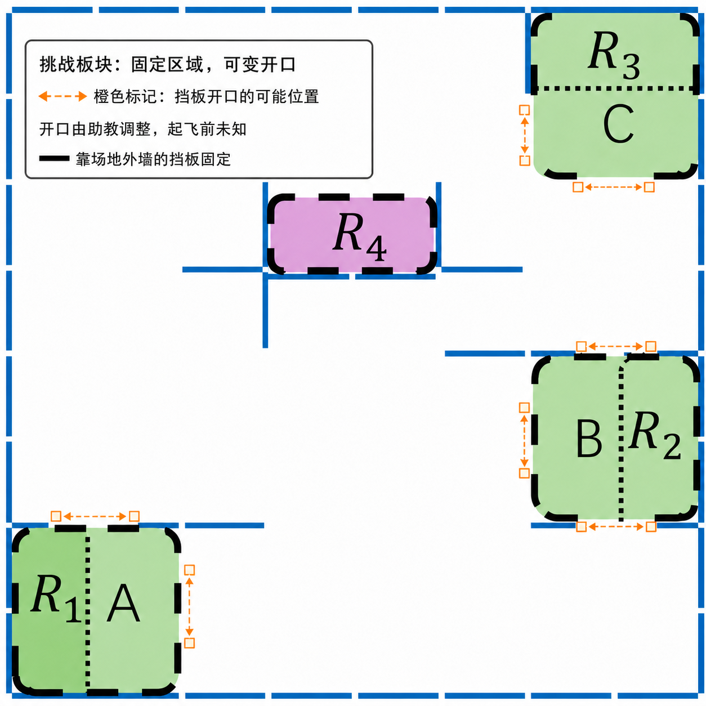

比赛说明：综合项目展示任务
Integrated Project Competition
运行前确认小组 URI
本实验的 Python 脚本统一从环境变量 CFLIB_URI 读取实验 3 中分配的完整 radio URI，不需要把小组地址重复写入每个代码文件。打开新终端后先执行：
echo "$CFLIB_URI"输出必须与本组标签上的完整 URI 完全一致，包括接口编号、channel、速率和 address。若输出为空或不正确，请返回实验 3 的“将完整 URI 保存到虚拟机”步骤重新设置；确认无误后再运行本实验脚本。
一、综合项目展示任务说明
本任务面向本次暑期学校前三天实验内容，旨在让同学们综合展示环境配置、无人机控制、传感器应用、路径规划与团队协作能力。展示任务鼓励大家在安全边界内发挥创意，把前面完成的实验内容组织成可演示、可解释、可复盘的小项目。
二、任务内容
本次综合项目展示分为创意任务和竞速任务两个板块。完成基础任务即可视为达到展示要求；如果任务完成效果更好，或在路径设计、控制策略、传感器使用、团队协作等方面体现出自主优化思路，可在展示评价中获得更高反馈。
创意板块
该板块的展示任务希望同学们根据学习到的 Crazyflie 无人机传感器应用知识以及相应的软件编程知识来完成，不限定使用何种传感器或程序模块，鼓励同学们在规则基础上发挥创意，以更优策略完成任务。
规则摘要
| 项目 | 创意板块规则 |
|---|---|
| 任务路线 | 从 A 区起飞，经过 B、C 区后返回 A 区降落；B、C 的先后顺序不限。 |
| 速度 | 全程采用同一个恒定速度，且必须低于 0.3 m/s。 |
| 高度 | 飞行高度不得高于挡板顶沿，场地挡板高度为 45 cm。 |
| 碰撞 | 单次有效任务最多允许 2 次明确碰撞；发生第 3 次碰撞时，本次任务立即失效。 |
| 奖励点 | R1、R2、R3、R4 均为奖励点。R1 位于起终点 A 区，同样计入奖励。 |
| 成绩方向 | 按计分公式计算，最终数值越小越好。 |
1. 题目说明
现在先对该板块的实践展示任务的任务要求做出说明。首先任务的地图环境如下所示，各个任务区域的示意区间也已经标注出来。其中，A、B、C区域的大小为2*2的挡板大小（矩形挡板的高为45cm，宽为35cm，挡板为竖立放置,即ABC区域实际大小为70cm*70cm），R1、R2、R3、R4区域为1*2的挡板大小，其中R1、R2、R3分别位于A、B、C区域内。
大体的任务要求如下：无人机摆放在A区域内任意位置起飞，需要经过B和C点最终降落在A点内。经过B点和C点的顺序任意发挥，即大体上的途经点要求为：
ABCA或者ACBA
奖励机制：R1、R2、R3、R4 均设置奖励。R1 位于起终点 A 区；R2、R3、R4 分布在任务路径中。每个奖励点在单次任务中最多计入一次。
创意板块的成绩同时考虑有效飞行距离、奖励和降落惩罚，具体以展示流程中的计分公式为准。

2. 展示流程
展示前需向教师说明代码逻辑、恒定飞行速度、传感器使用方式和急停方案，教师确认后方可起飞。飞行速度必须低于 0.3 m/s，且任务过程中不得改变。展示时一名组员负责终端和紧急停止，另一名组员完整录像。教师从无人机开始在 xy 平面移动时开始计时，在无人机开始执行降落动作时停止计时。最终成绩按下式计算：
创意板块计分公式
S = v × (t1 - t2) - Reward + Punish
S：最终成绩（m），数值越小越好。v：整个任务流程中设置的恒定飞行速度（m/s）。t1：无人机从起点开始在 xy 平面移动，到开始降落之间的现场计时（s）。t2：代码中每一步移动后为稳定姿态而调用time.sleep的总时长（s），起飞前由教师根据代码确认。Reward：R2、R3 各奖励 1.4 m，R4 奖励 4.9 m，R1 奖励 1.05 m；满足对应条件的奖励累加后代入公式。Punish：最终在 A 区降落但位置不规范时计 0.35 m；无此情况时为 0。
3. 评价标准细则
创意板块的最终展示评价结果从低到高分别为：通过、良好、优秀。
完成基础的任务（即从A点起飞，经过B和C再回到A）则可以在该板块取得通过的成绩。
整个飞行过程中，无人机飞行高度不得高于挡板顶沿（45 cm）。单次任务最多允许 2 次明确碰撞；发生第 3 次碰撞时，本次飞行任务立即失效。极轻微擦碰不计入碰撞次数；是否构成明确碰撞以教师现场判定和视频记录为准。碰撞次数不直接代入计分公式，只用于判断本次任务是否有效。
无人机的垂直投影的评判标准以四个电机的位置为准，四个电机的垂直投影都在某个区域视为投影完全在这个区域内，有一个电机的投影经过某个区域，则视作是经过这个区域。
无人机的垂直投影完全经过B和C区域内算作历经了B和C区域，无人机降落时完全位于A区域内算作降落成功，若降落在A区时整个无人机只有部分位于A区，则罚0.35m的成绩（总成绩加上0.35m）。若降落时整个无人机完全不在A区域则视作此次飞行任务失败。
R1、R2、R3、R4 均可获得奖励。对于 R2、R3、R4，无人机在飞行过程中的垂直投影经过对应区域即可获得该区域奖励；R1 位于起终点 A 区，无人机最终降落并静止后，至少两个电机的投影位于 R1 区域内或边界上，即可获得 R1 奖励。每个奖励点在单次任务中只计一次。
4. 展示评价说明
最终成绩结算时，前三分之一排名的组别获得优秀的评级，中间三分之一排名的组别获得良好的评级，后三分之一排名的组别获得通过的评级。
鼓励技术创意：
累计取得两次有效成绩且这两次成绩都没有被罚时，两次运行无人机的代码所用的API不完全相同（举例：motioncommander、multiranger、positioncommander）。
累计取得两次有效成绩且这两次成绩都没有被罚时，两次运行无人机的代码所采用的大体的运行逻辑完全不同（举例：条件控制语句while和if else的运用）。
其它被老师认为体现了自主创意的技术运用。
达成以上一个条件，则可以在最终成绩定榜结算时，评级往上升一级，达成两个条件可以评级升两级，封顶为优秀评级。
5. 展示建议
建议无人机起飞时远离挡板，以及起飞速度设置得低一点，便于稳定起飞姿态，减小每次起飞稳定位置后的姿态。
保证随时有同学控制着终端，无人机如果开始不停地剐蹭挡板，请尽快终止程序免于对无人机硬件的损坏。
注意在场地试飞时的秩序，同学们自觉礼让，避免无人机相撞和影响。
如以上规则遇到不明确不理解的地方，咨询老师以明确标准。
竞速板块
该板块以完成时间为主要排序依据，不设置比赛速度上限，但必须同时满足高度和零碰撞要求。任何一次明确碰撞都会使本次竞速成绩失效。
规则摘要
| 项目 | 竞速板块规则 |
|---|---|
| 任务路线 | 从图示起点起飞，进入终点区域并完成降落。 |
| 速度 | 不设速度上限；参赛组自行确定速度和控制策略。 |
| 高度 | 飞行高度不得高于挡板顶沿，场地挡板高度为 45 cm。 |
| 碰撞 | 不允许碰撞；发生任何一次明确碰撞，本次成绩立即失效。 |
| 计时 | 从无人机离开地面开始，到在终点区域完全降落并静止为止。 |
| 成绩方向 | 计入落点罚时后，用时越短越好。 |
1. 题目说明
该板块的地图环境与创意板块的地图环境一致，详细地图尺寸参数可以参考创意版模块部分的说明
无人机从图示起点区域内任意位置起飞，并在终点区域完成降落。竞速板块不设置速度上限；飞行高度不得高于挡板顶沿（45 cm）。从无人机离开地面开始计时，到无人机在终点区域完全降落并静止时停止计时。发生任何一次明确碰撞时，本次成绩立即失效，不再继续计时排名。

2. 展示流程
两种方式
①准备好了之后找到老师帮助计时登录成绩，将会按照上述的题目要求帮助计时录入成绩。
②可以自己拍摄视频录下整个飞行过程，以视频的时长来判别整体花费的时间登入成绩，但是一定要注意视频要拍清楚无人机起飞和降落的整个过程，拍清楚无人机从什么时候开始起飞，以及无人机最终降落的位置要拍清楚，是否位于最终降落的区间。
3. 评价标准细则
有效竞速任务必须全程保持在挡板顶沿以下且没有发生碰撞。最终降落时，至少两个电机位于终点区域内或边界上，视为正常完成；若只有一个电机位于终点区域内或边界上，成绩增加 5 秒罚时；其它降落情况均视为本次成绩失效。
4. 展示评价说明
竞速板块最终结果按照小组进行排序，并与创意板块表现一起纳入综合展示评价。
5. 展示建议
保证随时有同学控制着终端，无人机如果开始不停地剐蹭挡板，请尽快终止程序免于对无人机硬件的损坏。
注意在场地试飞时的秩序，同学们自觉礼让，避免无人机相撞和影响。
如以上规则遇到不明确不理解的地方，咨询老师以明确标准。
强烈建议同学们可以先有一个比较基础的成绩，再有成绩的基础上继续优化。
挑战板块（20% 附加分）
挑战板块为自愿参加的附加任务，满分上限为基础综合评价满分的 20%。不参加或挑战未形成有效成绩，不扣除创意板块和竞速板块已经获得的基础成绩。
核心变化：开口位置赛前未知
挑战任务建立在创意板块规则之上。A、B、C 任务区域及 R1、R2、R3、R4 奖励点的位置保持固定；贴靠场地外墙的挡板保持固定，仅朝向场地内部的挡板段和开口会由助教在每次挑战前调整。参赛组在起飞前不能获知、查看或试飞当次布局。

挑战规则
- 沿用创意板块的任务路线、计分公式和奖励数值：从 A 区起飞，经过 B、C 后返回 A 区，R1-R4 均可计入奖励。
- 沿用创意板块的飞行限制：全程恒定速度且低于
0.3 m/s，飞行高度不得高于 45 cm 挡板顶沿，单次任务最多允许 2 次明确碰撞。 - A、B、C 和 R1-R4 的位置固定，贴靠场地外墙的挡板也保持固定；仅朝向场地内部的挡板段、通道方向及开口位置可以变化，当次布局以助教完成的现场摆放为准。
- 参赛代码应根据飞行中的传感器数据识别可通行方向。仅依赖预先写死的挡板坐标或固定开口位置，不能满足挑战要求。
- 挑战成绩仍使用创意板块公式计算，数值越小越好；有效挑战成绩用于单独核算最高 20% 的附加分。
挑战流程
- 小组完成代码、硬件和急停检查后，先通知助教，不得自行开始挑战。
- 助教仅调整 A、B、C 朝向场地内部一侧的挡板和开口位置，贴靠场地外墙的挡板不作调整；参赛组在起飞前不得查看布局或进行试飞。
- 助教确认场地安全并开始协助录像后，通知小组起飞。录像应完整覆盖起飞、经过 B/C、奖励点判定、碰撞情况和返回 A 区降落。
- 任务结束后，由助教记录当次布局、计时、奖励点、碰撞次数、降落位置和任务是否有效。
最终综合展示评价说明
基础综合评价仍由创意板块和竞速板块各占 50% 组成；挑战板块在基础评价之外单独提供最高 20% 的附加分。
综合评价指数 =（创意板块评价排名+竞速板块排名）/2
在创意板块中，获得优秀评价的排名为1，良好评价的排名为2，完成基础要求的排名为3。
基础综合评价指数越小，基础评价越好。挑战附加分在基础评价完成后单独记录；不参加挑战或挑战成绩失效时，附加分记为 0，但不倒扣基础评价。
比赛场地记录
比赛评价应结合现场飞行、终端日志和影像记录，核对关键通行点与安全边界。

综合任务飞行记录
视频记录用于核对路线完成情况、安全边界和评分依据。